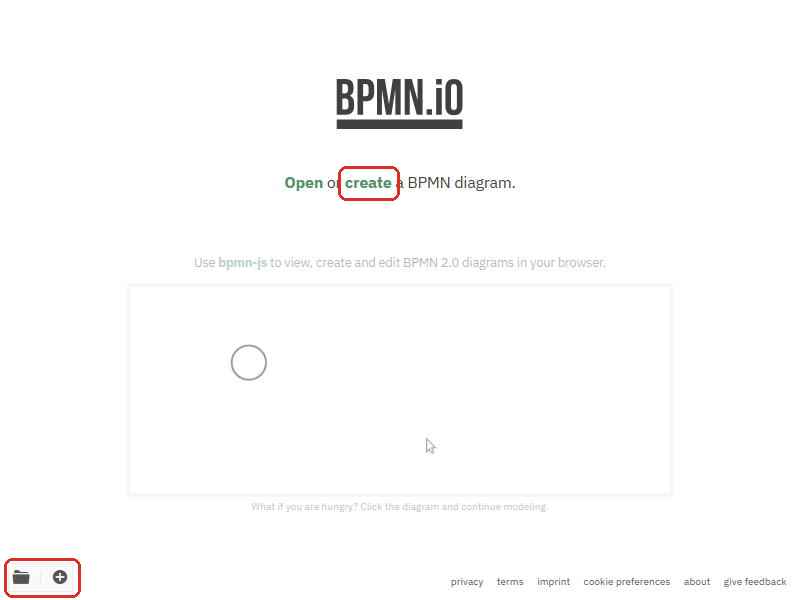
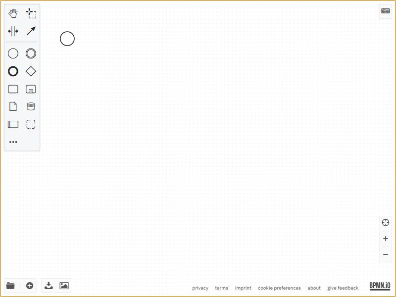
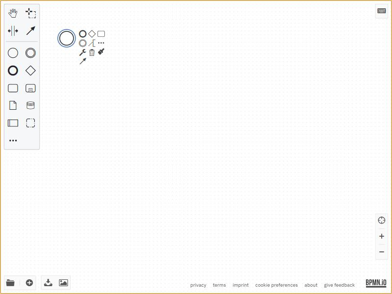
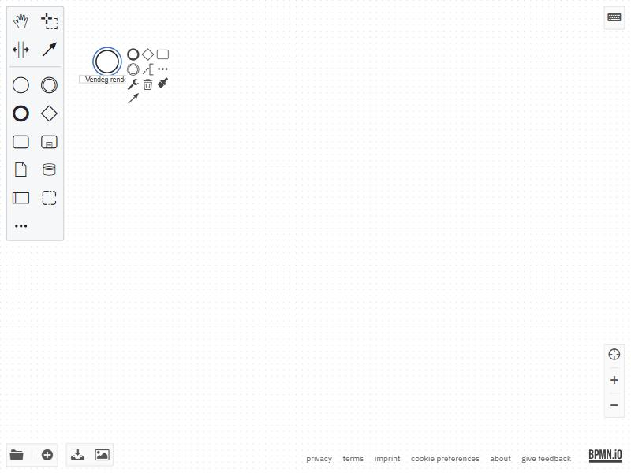
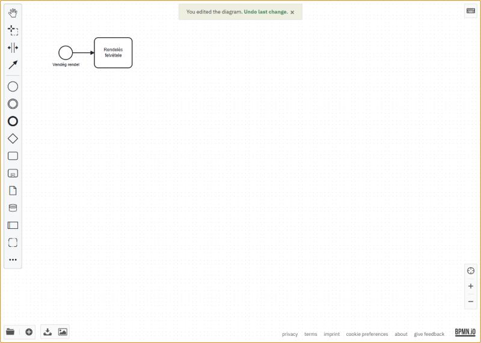
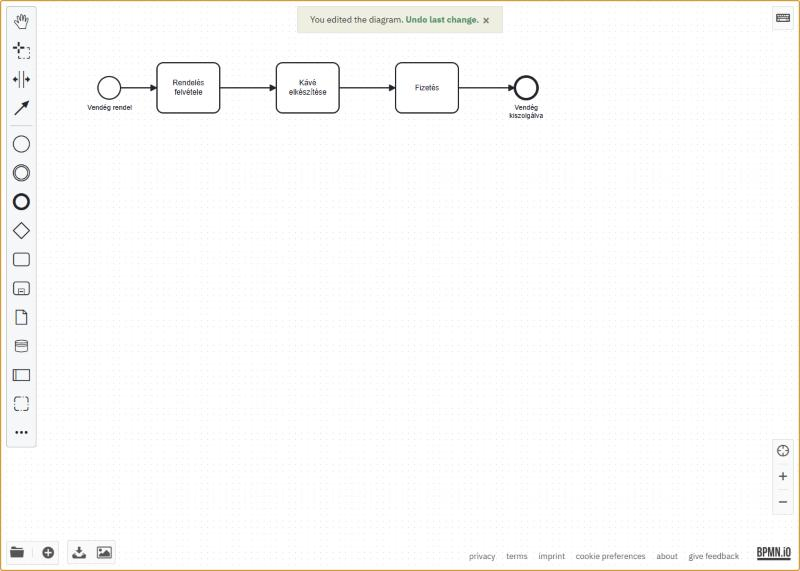
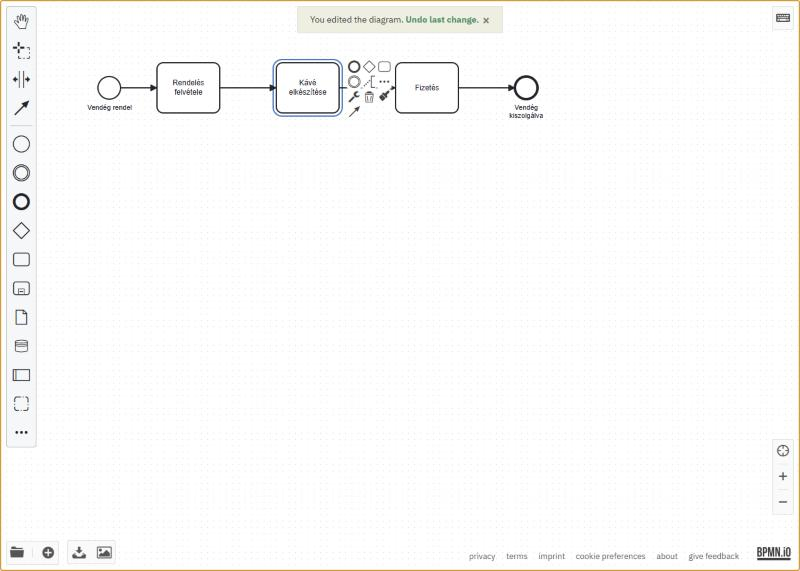
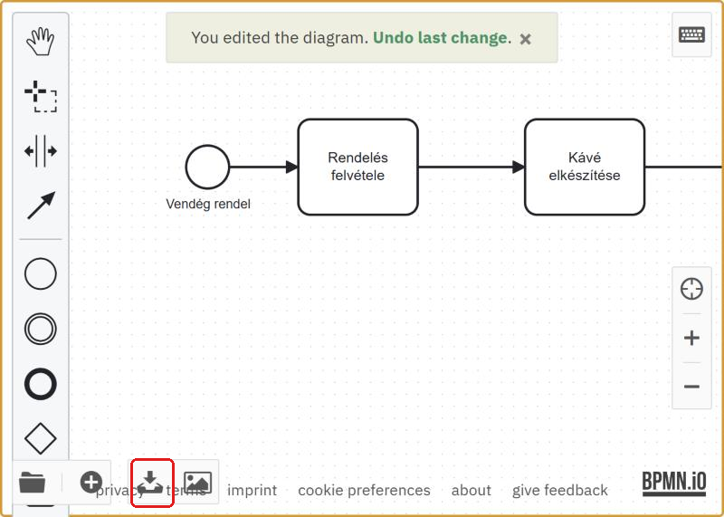
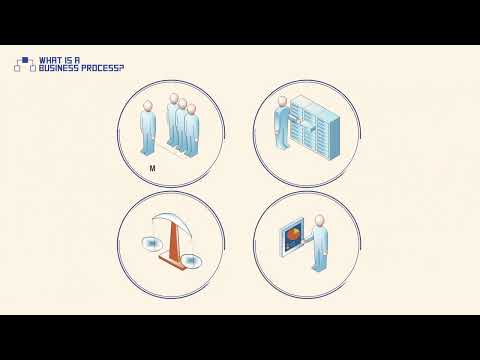

Az első folyamatábrád
Böngészős szerkesztőben (bpmn.io) megrajzolod, elmented és visszatöltöd az első BPMN-modelledet: ehhez nem kell telepítés és regisztráció.
- megrajzoltad az első saját folyamatábrádat, és el is mentetted (.bpmn fájlba);
- tudod, mi mire való a szerkesztő felületén: paletta, vászon, helyi menü, mentés;
- vissza is töltöttél egy kész modellt: a mentést és a megnyitást is kipróbáltad.
Mivel rajzolunk?
Az eszközünk a bpmn.io: egy böngészőben futó, ingyenes folyamatmodellező. Nem kell telepíteni, nem kell regisztrálni, és szabványos BPMN 2.0 fájlt ment, amit a szimulátorunk (második nap) és az ellenőrző programjaink is olvasnak. A második naptól ezzel készíted a folyamatmodelleket; ebben az útmutatóban megismered az alapműveleteit.
- Nyisd meg ezt az oldalt: https://demo.bpmn.io. A nyitóoldalon két lehetőség van: Open (meglévő fájl megnyitása) és create (új diagram). Ugyanezt tudja a bal alsó sarok két ikonja is: a mappa (megnyitás) és a + (új diagram).

A nyitóoldal. Új diagramhoz a create feliratra vagy a bal alsó + ikonra kattints. - Kattints a create feliratra. Megnyílik az üres szerkesztő: bal oldalt a paletta (innen húzod be az elemeket), középen a vászon, rajta egy kezdő esemény (vékony szegélyű kör). Bal alul a mentés-ikonsor, jobb alul a nagyítás.

A felület térképe. Ezt a négy zónát fogod használni: paletta, vászon, bal alsó ikonsor, jobb alsó nagyítás. - Kattints egyszer a kezdő eseményre. Az elem mellett megjelenik a helyi eszköztár (context pad). Innen fűzhetsz hozzá új elemet, húzhatsz nyilat, módosíthatod az elem típusát vagy törölheted az elemet. A tevékenység hozzáfűzésekor a szerkesztő a kapcsolatot is megrajzolja.

A helyi eszköztár: a lekerekített téglalap ikonnal rögtön tevékenységet fűzöl hozzá, a nyilat is megrajzolja. - Nevezd el a kezdő eseményt: kattints rá duplán, és gépeld be: Vendég rendel. Kattints a vászon üres részére, és a felirat rögzül. (Bármelyik elemet bármikor átnevezheted dupla kattintással.)

Elnevezés dupla kattintás után. A folyamataidban minden elemnek adj nevet. - Fűzd hozzá az első tevékenységet: jelöld ki a kezdő eseményt, és a helyi eszköztáron kattints a lekerekített téglalapra. Nevezd el: Rendelés felvétele.

Az első tevékenység elkészült: a nyilat a szerkesztő rajzolta meg, neked csak elnevezned kellett. - Építsd tovább ugyanígy a kávézós mini folyamatot: Kávé elkészítése, majd Fizetés tevékenység, a végére pedig záró esemény (a helyi eszköztár vastag szegélyű köre), Vendég kiszolgálva névvel.

A kész mini folyamat. Új lépést legegyszerűbben az utolsó tevékenységhez fűzhetsz. Meglévő kapcsolat közepére a palettáról húzhatsz tevékenységet; elengedés előtt ellenőrizd, hogy a kapcsolat kiemelése jelzi a beszúrást. 
A helyi eszköztár egy tevékenységen a kész folyamatban - Mentsd el: a bal alsó ikonsorban a lefelé nyíl tölti le a modellt BPMN formátumban. Mentsd kave_rendeles.bpmn néven. Javaslat: hozz létre a gépeden egy BPA_kurzus mappát, és a félévben mindent oda ments. (A kép ikon SVG-képet ment: az csak illusztrációnak jó, a szimulátor nem tudja megnyitni.)

A bal alsó ikonsor: mappa = megnyitás, + = új diagram, lefelé nyíl = BPMN letöltése (ezt használd), kép ikon = SVG.
A letöltések közt megjelent a kave_rendeles.bpmn fájl, és a neve végén tényleg .bpmn áll.
Ha mást látsz: ha .svg lett a vége, a kép ikont választottad a lefelé nyíl helyett; töltsd le újra BPMN-ként.
Próbáld ki ezt is:
- Keresd meg a kave_rendeles_mini.bpmn állományt a Moodleről letöltött dokumentumok között (a docs mappában kell lennie).
- A demo.bpmn.io nyitóoldalán válaszd az Open lehetőséget (vagy a szerkesztőben a bal alsó mappa ikont), és nyisd meg a fent azonosított állományt. Ugyanazt a folyamatot kell látnod, amit az előbb építettél.
Rajzold le a saját reggeli rutinodat legfeljebb hat lépésben, kezdő és záró eseménnyel. Például: Ébresztő szól → … → Elindulok otthonról. Mentsd reggeli_rutin.bpmn néven. Elsőként a folyamat legyen követhető: megfelelő kezdő- és záró esemény, helyes sorrend, elnevezett lépések.
Otthonra: mi az az üzleti folyamat?
A második nap előtt nézd meg ezt a rövid bevezető videósorozatot; ez adja a közös szókincset (folyamat, bemenet, kimenet, szereplő):

YouTube · Lejátszási listaBusiness Process Modeling bevezetőA teljes sorozat megnyitása új lapon →- Bármilyen munkaköri betanítási dokumentáció: egy jó ábra tíz oldal szövegnél többet ér.
- Szabályzatok, ügyrendek vizualizálása.
- A második napon: kávézó terhelés alatt, webshop-rendelés, kárfelvétel és egy raktár-eset modellje.
- M. Dumas, M. La Rosa, J. Mendling, H. Reijers: Fundamentals of Business Process Management, 2. kiadás, Springer, 2018: az 1. fejezet áttekintés arról, mi az a folyamatmenedzsment.
- A BPMN 2.0 hivatalos specifikációja és jelöléskártyája: omg.org/spec/BPMN/2.0.2: referenciának, nem olvasmánynak.